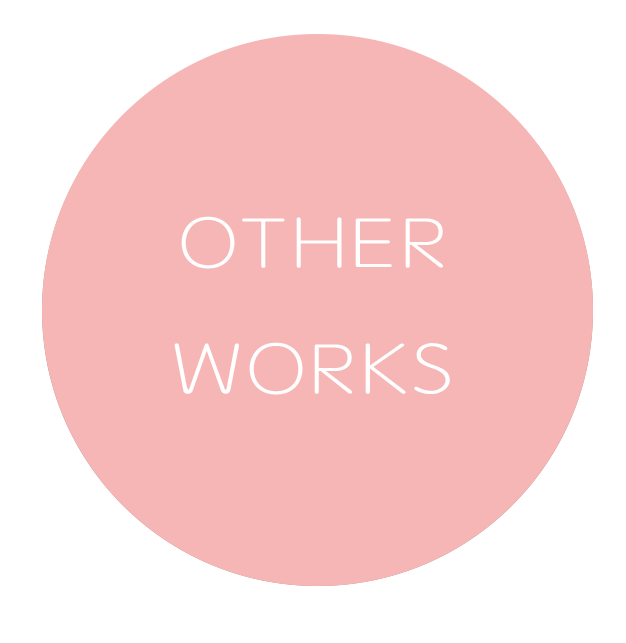
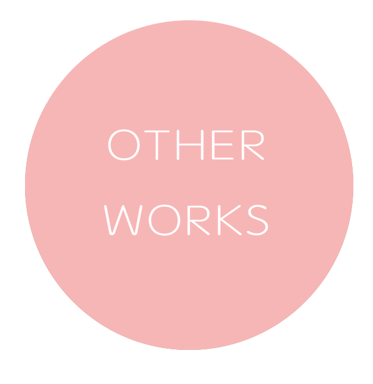

As an artist, I think doing art is anther way to express my feelings about my daily life, my opinions towards this world and maybe just show some random thoughts that appear in my mind to the others. I usually get my ideas and inspirations from things I have been through or books, films I have read or watched. Sometimes, I may include some big issues or events that happened around the world in my works to show my attitude. I come from China, so I will also add some Chinese culture into my artworks.
There is a lot of different genres of art, I can accept almost all of them, but I do not like all of them. I admire the very detailed skills and techniques that those old masters used in their traditional artworks in ancient times, but I prefer the contemporary art or concept art nowadays. I have tried many different types of art, such as painting, drawing, sculpture and digital art. For the digital art, I tried stop motion animation, media installation and shooting and editing videos. I found it is really interesting to do art with computers or some other new technologies. In future, I want to learn more about editing films with special effects or doing the computer graphics technology. I know it is hard, but I want to try my best to learn it.
 
